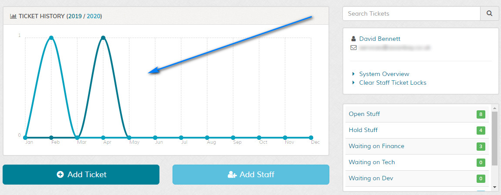
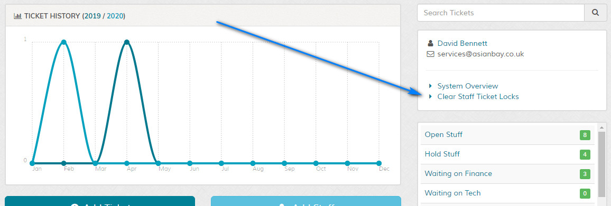
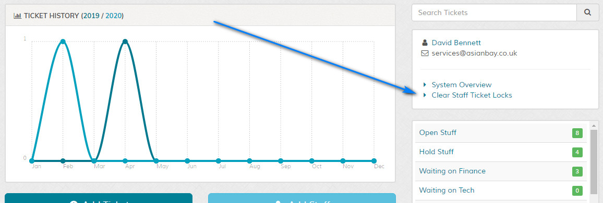

Admin Home
Overview
Overview of admin dashboard for support team members. Click example images to display full size version in new tab/window.
Admin Menu
{kind=link}
Admin Graph

Displays overview of tickets for current and previous year. Graph can be disabled in the 'control/options.php' file and the 'SHOW_ADMIN_DASHBOARD_GRAPH' option.
{kind=link}
Displays overview of tickets for current and previous year. Graph can be disabled in the 'control/options.php' file and the 'SHOW_ADMIN_DASHBOARD_GRAPH' option.
Search Tickets
Use the search box on the homescreen for quick searching tickets. More advanced options are available on the search tickets screen.
Totals and Overview
{kind=link}
Clear Staff Ticket Locks
This link is only shown if the option to lock staff tickets is enabled in the settings. It offers and easy way to release
tickets that are currently locked to another staff member.

Generally tickets are released when a staff member navigates to another page, however, if the staff member closes their browser or navigates to another website the lock may remain. Use this option to clear the lock.

{kind=link}
Generally tickets are released when a staff member navigates to another page, however, if the staff member closes their browser or navigates to another website the lock may remain. Use this option to clear the lock.
Ticket Lists
Shows lists of tickets. Each ticket row has a number of options. Please see any of the relevant ticket screens for descriptions. For administrators all
ticket assignments are shown if this feature is used. Tickets assigned to logged in user are shown first. Disputes are only seen if enabled.